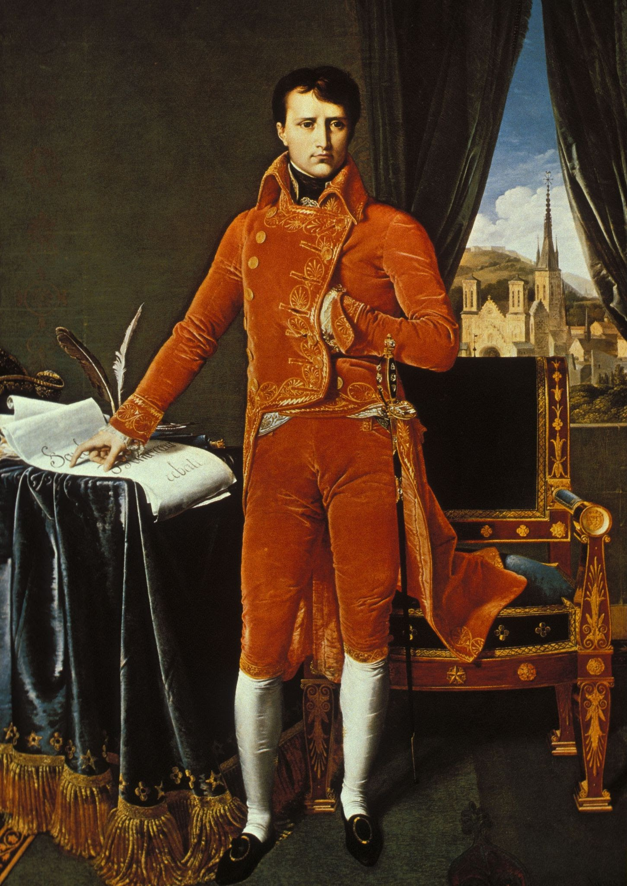
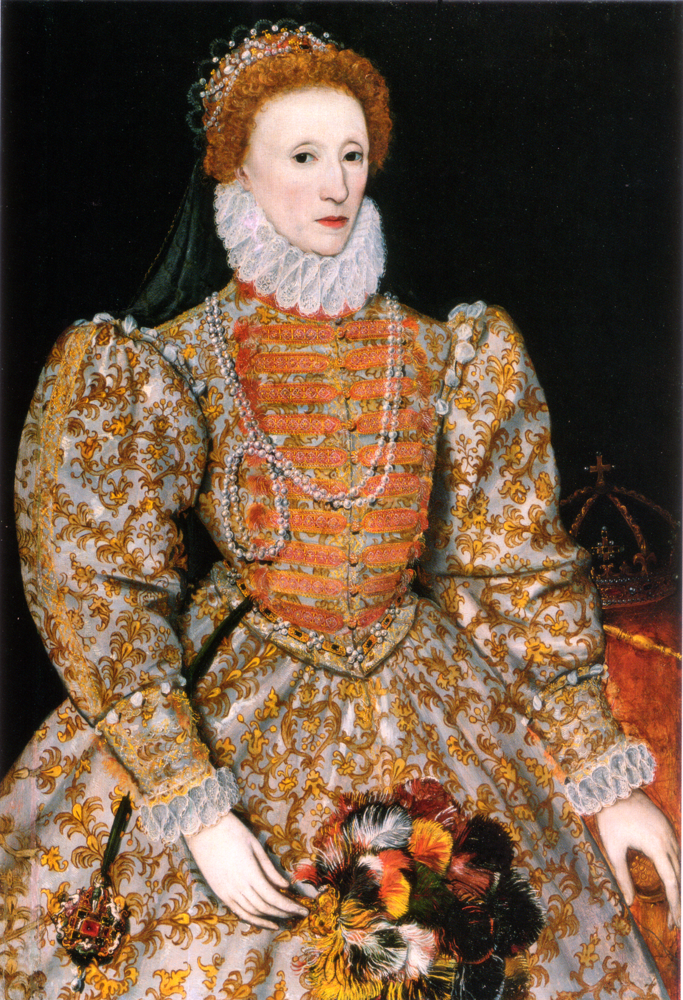
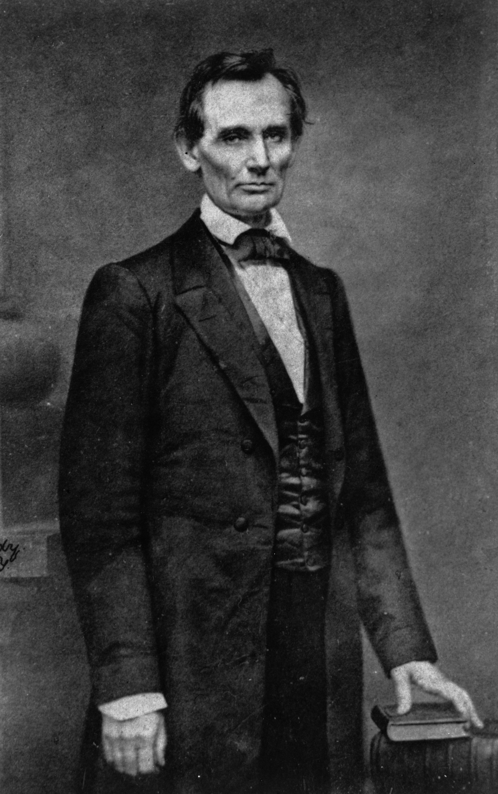
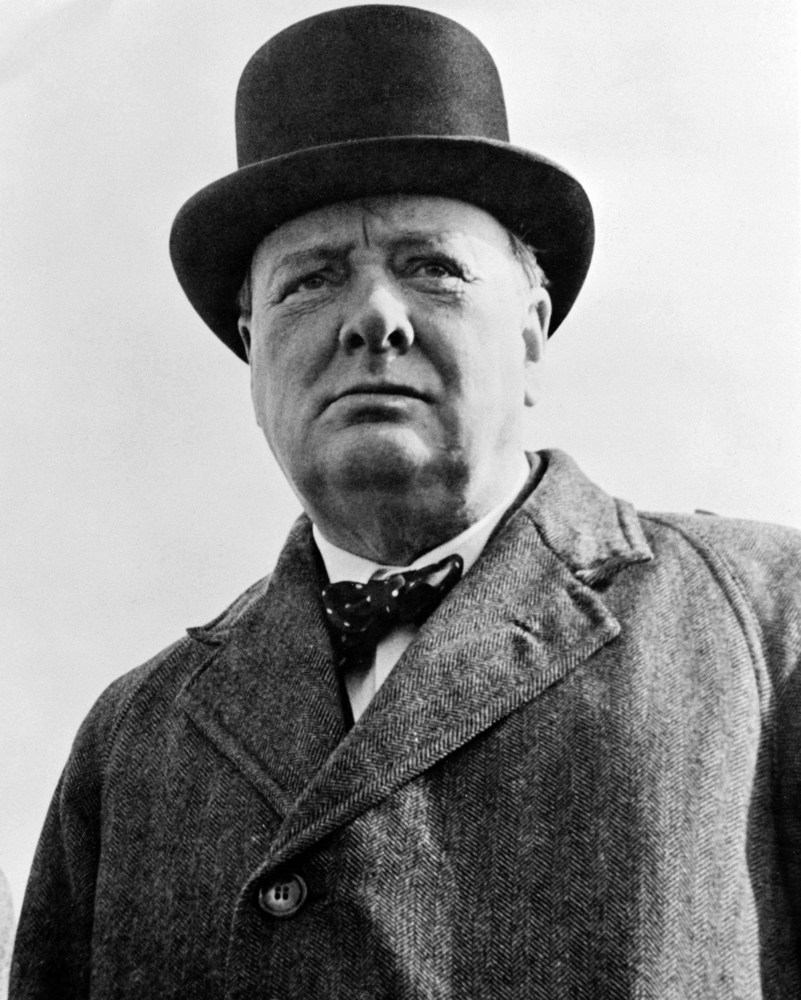
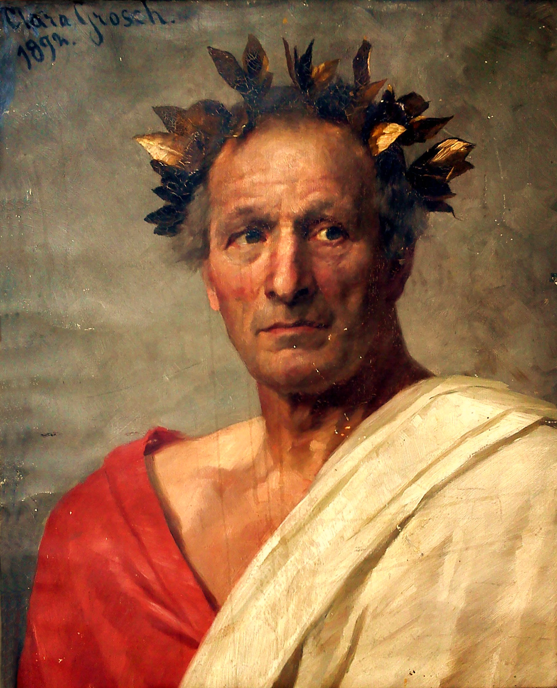

Kaisar Napoleon Bonaparte (Napoléon Bonaparte; bahasa Prancis: [napɔleɔ̃ bɔnapaʁt], Italia: [napoleoŋe bɔŋaparte], nama lahir "Napoleone di Buonaparte" (Italia: [napoleoŋe dj buɔŋaparte]); 15 Agustus 1769 – 5 Mei 1821) adalah seorang pemimpin militer dan politik Prancis yang menjadi terkenal saat Perang Revolusioner. Sebagai Napoleon I, dia adalah Kaisar Prancis dari tahun 1804 sampai tahun 1814, dan kembali pada tahun 1815. Napoleon berasal dari sebuah keluarga bangsawan lokal dengan nama Napoleone di Buonaparte (dalam bahasa Korsika Nabolione atau Nabulione).
Napoleon memiliki pengaruh yang besar terhadap persoalan-persoalan Eropa selama lebih dari satu dasawarsa ketika memimpin Prancis melawan koalisi dalam Perang-Perang Napoleonis. Ia memenangkan kebanyakan dari perang-perang ini dan hampir semua pertempuran-pertempurannya, dengan cepat memperoleh kendali Eropa kontinental sebelum kekalahan terakhirnya pada tahun 1815.
Karena merupakan salah seorang panglima terhebat dalam sejarah, kampanye-kampanyenya dipelajari di sekolah-sekolah militer di seluruh dunia dan ia tetap salah satu tokoh politik yang paling terkenal dan memicu perdebatan dalam sejarah Barat. Dalam persoalan-persoalan sipil, Napoleon mempunyai sebuah pengaruh yang besar dan lama dengan membawa pembaruan liberal ke negara-negara yang ia taklukkan, terutama ke Negara-Negara Rendah, Swiss, Italia, dan sebagian besar Jerman. Ia melaksanakan kebijakan-kebijakan liberal pokok di Prancis dan di seluruh Eropa Barat. Prestasi hukumnya yang kekal adalah Kitab Undang-undang Napoleon, yang telah digunakan dalam berbagai bentuk oleh seperempat sistem hukum dunia, dari Jepang sampai Quebec.

Queen Elizabeth I (1533–1603) adalah ratu Inggris dari Dinasti Tudor yang memerintah sejak 1558 hingga 1603. Ia merupakan putri Raja Henry VIII dan Anne Boleyn. Masa kecilnya penuh tantangan, termasuk pencopotan statusnya sebagai putri sah setelah ibunya dieksekusi. Meski demikian, Elizabeth tumbuh sebagai perempuan yang sangat cerdas dan terdidik, menguasai banyak bahasa dan memiliki kemampuan diplomasi yang luar biasa. Ketika naik takhta pada usia 25 tahun, ia mewarisi kerajaan yang dipenuhi konflik agama, ancaman asing, dan ketidakstabilan politik.
Selama masa pemerintahannya, Inggris memasuki era keemasan yang dikenal sebagai Era Elizabethan. Elizabeth berhasil menciptakan kebijakan agama yang moderat, memperkuat angkatan laut Inggris, dan membawa kemenangan melawan Armada Spanyol pada 1588. Pemerintahannya juga menjadi puncak perkembangan seni dan sastra, dengan munculnya tokoh seperti William Shakespeare. Elizabeth memilih untuk tidak menikah, sehingga dikenal sebagai The Virgin Queen. Ketika wafat pada tahun 1603, ia meninggalkan warisan sebagai salah satu pemimpin terbesar Inggris yang membawa stabilitas, kemajuan budaya, dan fondasi kekuatan nasional.

Abraham Lincoln (1809–1865) adalah Presiden ke-16 Amerika Serikat yang dikenal sebagai pemimpin yang membawa negara melalui masa paling kelam dalam sejarahnya, yaitu Perang Saudara Amerika. Lahir di sebuah keluarga sederhana di Kentucky, Lincoln tumbuh dalam keterbatasan dan sebagian besar pendidikannya bersifat otodidak. Ketekunannya membawanya menjadi pengacara, anggota legislatif, dan kemudian tokoh politik nasional yang vokal menentang perluasan perbudakan.
Sebagai presiden, Lincoln dikenal karena kebijakannya yang tegas untuk mempertahankan persatuan Amerika Serikat dan usahanya menghapus perbudakan. Pada tahun 1863, ia mengeluarkan Emancipation Proclamation yang membebaskan budak di wilayah Konfederasi. Kepemimpinannya selama perang menjadikannya simbol persatuan dan kemanusiaan. Namun, masa pemerintahannya berakhir tragis ketika ia dibunuh pada tahun 1865, tidak lama setelah perang berakhir. Lincoln kini dikenang sebagai salah satu presiden terbesar dalam sejarah Amerika.

Winston Churchill (1874–1965) adalah negarawan, orator, dan penulis Inggris yang dikenal sebagai salah satu tokoh paling berpengaruh pada abad ke-20. Lahir dalam keluarga aristokrat, ia menempuh pendidikan di Harrow dan Royal Military Academy Sandhurst sebelum memulai karier sebagai tentara dan koresponden perang. Pengalaman di medan perang, seperti di Sudan dan Afrika Selatan, membentuk pemikirannya tentang strategi militer dan kepemimpinan.
Karier politik Churchill dimulai ketika ia menjadi anggota parlemen pada awal abad ke-20. Ia sempat menjabat dalam berbagai posisi penting, termasuk First Lord of the Admiralty, di mana ia berperan dalam memodernisasi Angkatan Laut Inggris. Namun, puncak kariernya muncul saat ia menjadi Perdana Menteri Inggris selama Perang Dunia II (1940–1945). Pada masa paling kritis itu, Churchill menjadi simbol keteguhan dan keberanian melalui pidato-pidatonya yang membangkitkan semangat rakyat Inggris untuk melawan agresi Nazi.
Setelah perang, Churchill kembali menjabat sebagai perdana menteri pada 1951–1955 dan terus memiliki pengaruh besar dalam politik dan hubungan internasional. Selain sebagai pemimpin negara, ia juga seorang penulis produktif dan memenangkan Hadiah Nobel Sastra pada tahun 1953 atas karya-karyanya tentang sejarah dan pidatonya. Churchill meninggal pada tahun 1965 dan dikenang sebagai ikon kepemimpinan, keberanian, dan ketangguhan dalam menghadapi krisis global.

Julius Caesar (100–44 SM) adalah seorang jenderal, politikus, dan pemimpin paling terkenal dalam sejarah Romawi. Ia lahir dari keluarga bangsawan kecil, tetapi sejak muda sudah menunjukkan ambisi dan kecerdasan besar. Kemampuannya dalam berbicara, strategi, serta membangun jaringan politik membuatnya cepat dikenal di Roma.
Karier militernya bersinar ketika ia menaklukkan Galia (wilayah Prancis dan sekitarnya saat ini). Kemenangan ini menjadikannya salah satu jenderal paling sukses pada masanya dan meningkatkan kekuasaannya secara drastis. Keberhasilannya membuat beberapa senator Romawi merasa terancam, termasuk saingannya, Pompey.
Setelah hubungan dengan Pompey memburuk, Caesar menyeberangi Sungai Rubicon pada tahun 49 SM—tindakan berani yang memicu perang saudara. Ia akhirnya menang dan menguasai Roma, lalu diangkat sebagai diktator. Di bawah kepemimpinannya, banyak reformasi dilakukan, seperti perbaikan kalender yang kemudian menjadi dasar kalender modern.
Namun, kekuasaannya yang besar membuat sebagian senator khawatir ia akan menjadi raja. Pada tahun 44 SM, Caesar dibunuh dalam rapat senat oleh kelompok konspirator yang dipimpin Brutus dan Cassius. Meskipun hidupnya berakhir tragis, warisannya tetap kuat dan ia dikenang sebagai salah satu tokoh paling berpengaruh dalam sejarah dunia.